Tema 12.- Angiospermas 1: caracteres vegetativos
| Carlos Romero Zarco, Universidad de Sevilla |
| Introducción |
||||||||
|
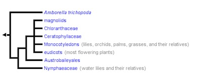 Filogenia de las angiospermas según TOL (2)
|
|||||||
| Sistema radical |
||||||||||||
|
||||||||||||
|
||||||||||||
|
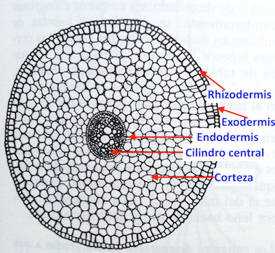 Estructura primaria de la raiz de Allium
sp.
Modificado de Strasburger 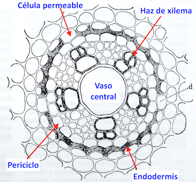 Corte del cilindro central de raiz de Allium sp. Modificado de Strasburger 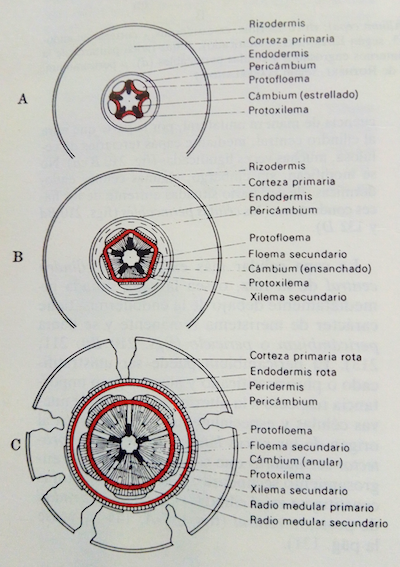 Cortes esquemáticos de raíz en con crecimiento secundario. De Strasburger |
|||||||||||
| Estructura del
vástago |
|||||
|
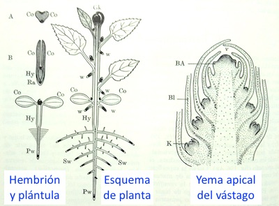 Esquema de hembrión, plántula, planta joven y corte de yema apical. Modificado de Strasburger |
||||
| Adaptaciones
del conjunto del vástago |
|||||||||||||
|
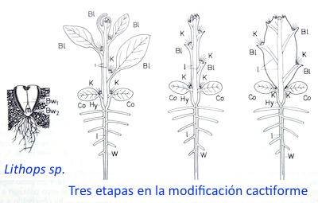 Plantas cactiformes. Modificado de
Strasburger.
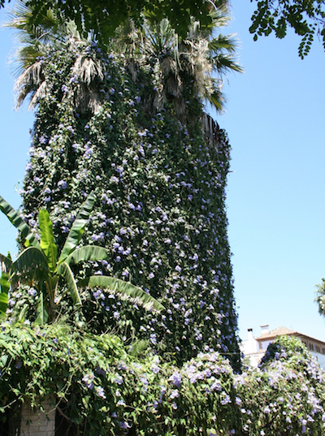 Planta trepadora: Thunbergia grandiflora (acantácea) sobre palmeras en Sevilla. C.R.Z. 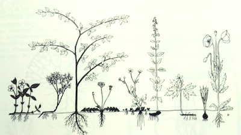 Formas biológicas de Raunkiaer. De Strasburger. 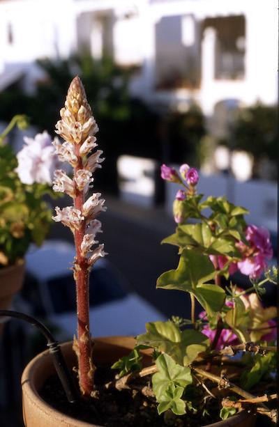 Planta parásita (Orobanche sp.) en maceta de geranio. C.R.Z. 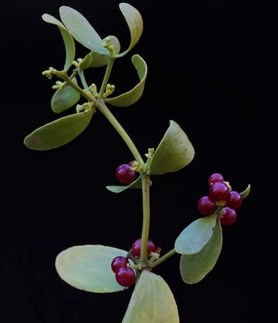 |
A la izquierda, Viscum cruciatum
(muérdago, fam. santaláceas).
De José Antonio Salvador (Facebook). Parasita plantas leñosas, especialmente de la familia Rosaceae. |
||||||||||||
| Estructura y
crecimiento del tallo |
|||||||||
Cortezas de Quercus suber (izda.) de Ayto. de Mondragón. Y Q. ilex (drcha.) - Modificado de Xemenendura - Trabajo propio, CC BY-SA 3.0, https://commons.wikimedia.org |
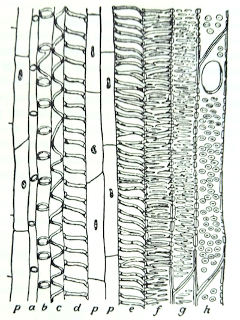 Elementos del protoxilema (a-d) y metaxilema
(e-h). De Strasburger. 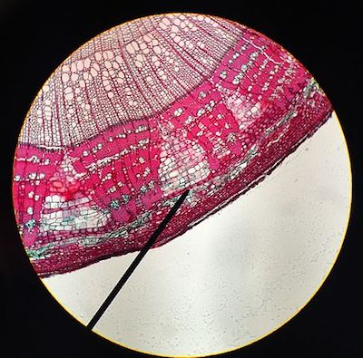 Posición del cambium suberógeno en la
corteza de un tilo. By Kje4532 - Own work, CC BY-SA 4.0,
https://commons.wikimedia.org
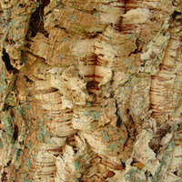 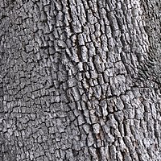 |
||||||||
|
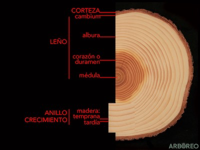 Partes de un tronco en una especie con duramen. |
||||||||
| Las hojas |
|||
|
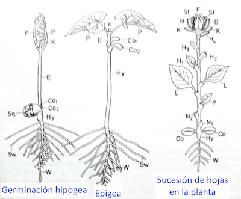 Primeras hojas y sucesión en la vida de la
planta.
Modificado de Strasburger
Izquierda: germinación hipogea y epigea;
Co, cotiledones; Hy, hipocótilo; E, epicótilo; P, hojas primarias (juveniles). |
|
||
| Resumen |
|